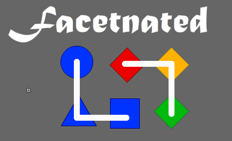
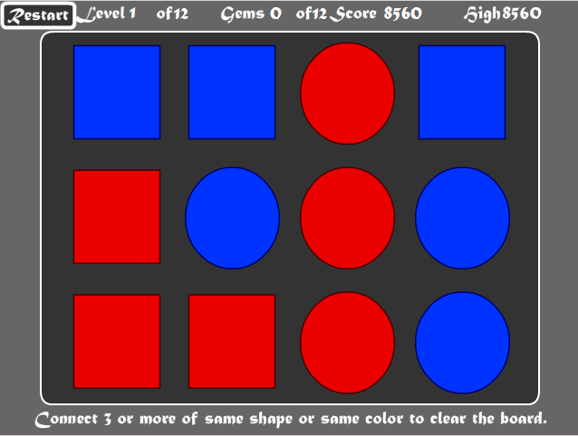
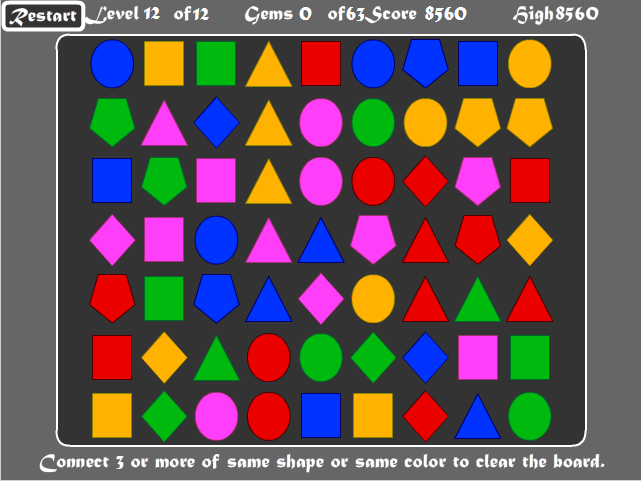

SPELLSTONE Spell words to clear the board and graduate. CLICK any 3 or more letters that spell a word. Clear the board to advance to the next grade. If you cannot clear the board, click Restart. Longer words score bonus points. Click a selected letter to remove it from the word. Clearing the board graduates to a higher grade.  Can you pass 1st grade?  Can you pass 10th grade?  To cheat to a higher grade, click the level number and then click Restart. A one-day game by Ethan Kennerly (February 22, 2014) Inspired by Jumble Jong on Yahoo Games. http://games.yahoo.com/game/jumble-jong-yap.html All word list from Moby via InfoChimps. Grade level spelling word list by Big IQ Kids.